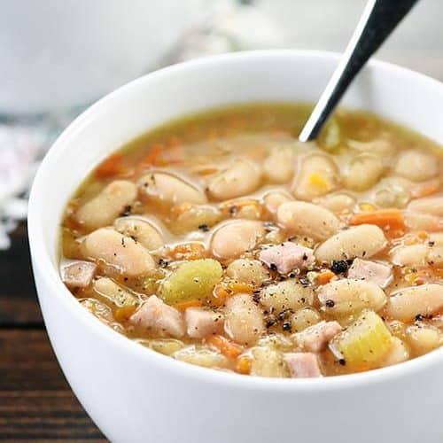

Ham & Bean Soup

Ingredients
- 1 can of great northern beans
- 1 cup shredded ham
- 1 yellow onion
- 3 cups chicken broth
- 2 bay leaves
- 5 cloves garlic
- Salt and pepper to taste
- 1 teaspoon cumin
- 1 tablespoon olive oil
- Green onions (for garnish)
Instructions
- Mince garlic and dice the onion. Chop green onions.
- Heat oil in a 5 quart cooking pot.
- Saute onion and garlic in the pot until onion is transluscent.
- Add ham to pot.
- Saute for 2 more minutes.
- Add chicken broth and spices. Stir well.
- Let simmer on low heat, covered, for 45 minutes.
- Drain and rinse beans.
- After 45 minutes is up, add beans and let simmer for another 10 minutes on low heat, covered.
- Serve, garnish with green onions, and enjoy.